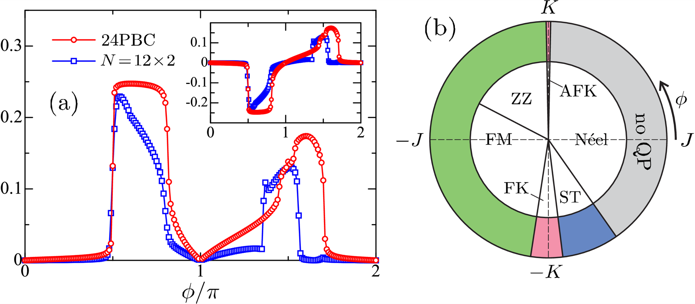
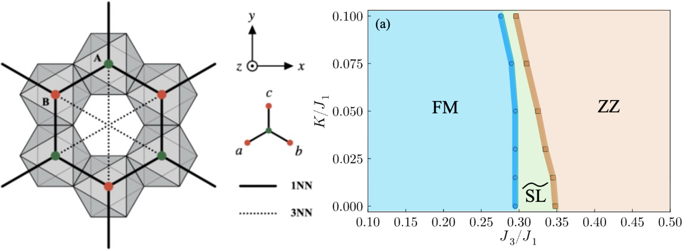
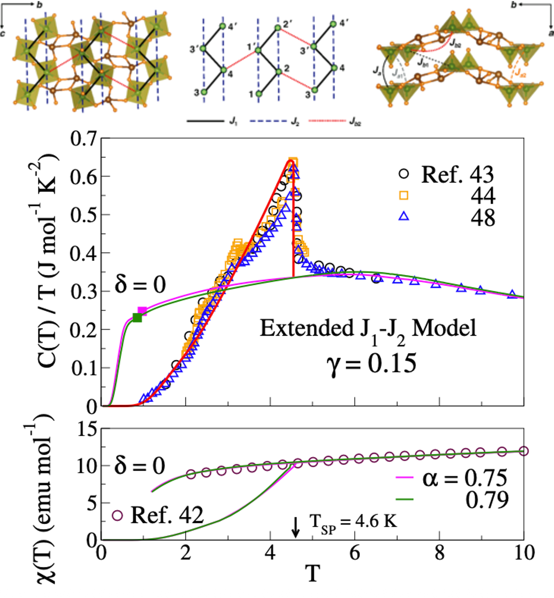
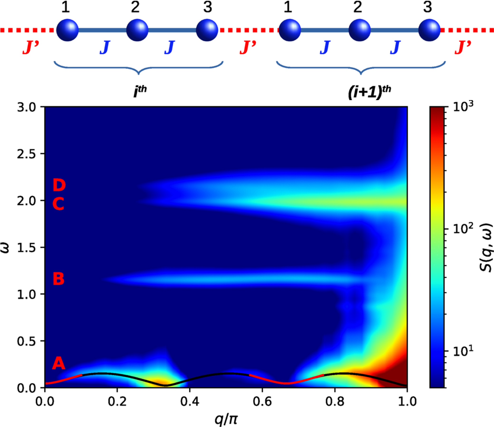

Research
Emergent phases in frustrated spin models

In our recent study [PRB (Letter) 109, L220403 (2024)], we examined the properties of the quadrupolar phase in the spin-1/2 Kitaev–Heisenberg model on two geometries: the two-legged ladder and the two-dimensional honeycomb lattice. Our analysis revealed a comprehensive ground-state phase diagram, showing the stability of quadrupolar order over a wide range of the phase diagram, particularly near the Kitaev spin liquid phases.
Currently, we are studying how Dzyaloshinskii–Moriya interactions affect the Kitaev–Heisenberg model. We are constructing the ground-state phase diagram and examining how the Kitaev spin liquid (KSL) phase responds to different strengths of these interactions.

In another work [PRB 108, 174422 (2023)], motivated by a neutron scattering study [PNAS 120, e2215509119 (2023)] that found cobaltates (Na2Co2TeO6 and BaCo2(AsO4)2) to be better described by a spin-1/2 XXZ model with ferromagnetic (FM) nearest-neighbor (NN) exchange J1 and antiferromagnetic (AFM) third-neighbor exchange J3 rather than a Kitaev model, we explored its phase diagram using numerical (ED and DMRG) and theoretical tools. Our analysis revealed the presence of a spin liquid at intermediate J3, closely tied to a Dirac spin liquid, with a Gutzwiller variational energy within a few percent of ED results.
Thermodynamics of quasi-one-dimensional spin systems
Calculating finite-temperature properties for quantum many-body systems in the thermodynamic limit is a challenging task. In our group, we have developed a method called “Hybrid ED/DMRG” [PRB 99, 195144 (2019)], which allows us to study the finite-temperature properties of frustrated spin models in 1D and quasi-1D systems. This method has been successfully applied to both spin and fermionic systems in 1D and quasi-1D geometries, achieving convergence to the thermodynamic limit for temperatures as low as T/J1 ~ 0.01.

In this work [PRB 105, 235109 (2022)], we investigated the spin-Peierls (SP) transition in the one-dimensional (1D) J1–J2 model and extended models with FM NN exchange J1 and AFM second-neighbor exchange J2. Applying the “Hybrid ED/DMRG” method, we compute thermodynamic properties such as susceptibility and specific heat at finite temperatures, which can capture the SP transition in the vanadium compound β-TeVO4.
Dynamics in one-dimensional spin systems

Understanding exotic forms of magnetism in quantum spin systems is an emergent topic of modern condensed matter physics. By applying DMRG with the correction-vector method, we can calculate the dynamical structure factor, which plays a central role in understanding magnetic systems by providing detailed information about their spin dynamics and excitation spectra. It is directly measurable in experiments such as inelastic neutron scattering (INS) and resonant inelastic X-ray scattering (RIXS). Recently, we studied a spin-1 trimer chain with antiferromagnetic couplings and identified a range of emergent quasiparticles—magnons, singletons, triplons, pentons, and heptons [PRB 112, 094436 (2025)].
Currently, in collaboration with experimentalists at BARC, Mumbai, India, we are studying the identification of emergent composite excitations of the novel quasiparticles—spinons, doublons, and quartons—in the spin-1/2 trimer-chain compound K2Cu3Ge4O12 and its topologically protected quantum 1/3 magnetization-plateau state.
Publications
See also my Google Scholar and arXiv profiles.
Preprints
None at the moment.
Journal articles
- 6. “Emergent quasi-particles in a spin-1 trimer chain”, , A. Biswas, M. Kumar, Phys. Rev. B 112 094436 (2025)
- 5. “Interchain interactions, multimagnon condensation, and strain effect in the chain compound NaVOPO₄”, M. Gupta, , M. Kumar, T. Saha-Dasgupta, Phys. Rev. B 110 054441 (2024)
- 4. “Emergent quadrupolar order in the spin-1/2 Kitaev–Heisenberg model”, , S. Ghosh, J. van den Brink, S. Nishimoto, M. Kumar, Phys. Rev. B (Letter) 109 L220403 (2024)
- 3. “Proximate Dirac spin liquid in the honeycomb lattice J₁–J₃ XXZ model: Numerical study and application to cobaltates”, A. Bose, , S. Voleti, S. K. Saha, M. Kumar, T. Saha-Dasgupta, A. Paramekanti, Phys. Rev. B 108 174422 (2023)
- 2. “Spin-Peierls transition of J₁–J₂ and extended models with ferromagnetic J₁: Sublattice dimerization and thermodynamics of zigzag chains in β-TeVO₄”, , S. K. Saha, M. Kumar, Z. G. Soos, Phys. Rev. B 105 235109 (2022)
- 1. “Low-temperature thermodynamics of the antiferromagnetic J₁–J₂ model: Entropy, critical points, and spin gap”, S. K. Saha, , M. Kumar, Z. G. Soos, Phys. Rev. B 103 245139 (2021)
Review articles
- 1. “Exploring quantum phases in frustrated spin-1/2 chain and ladders: a detailed review”, , S. Ghosh and M. Kumar, J. Phys.: Condens. Matter 37 403001 (2025) [Invited Topical Review]